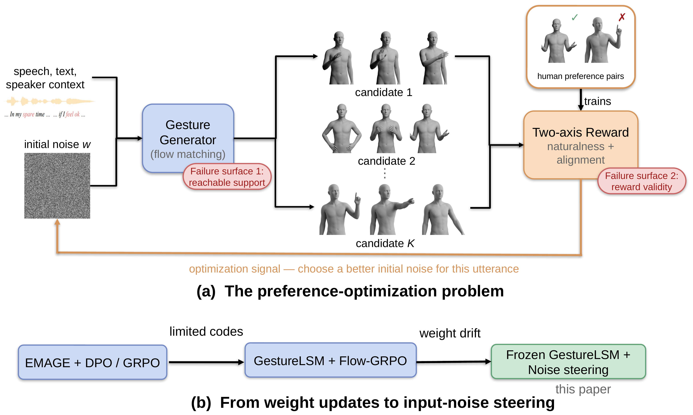
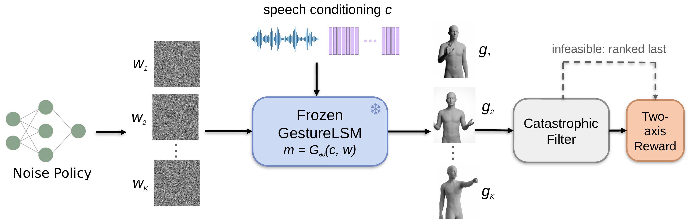
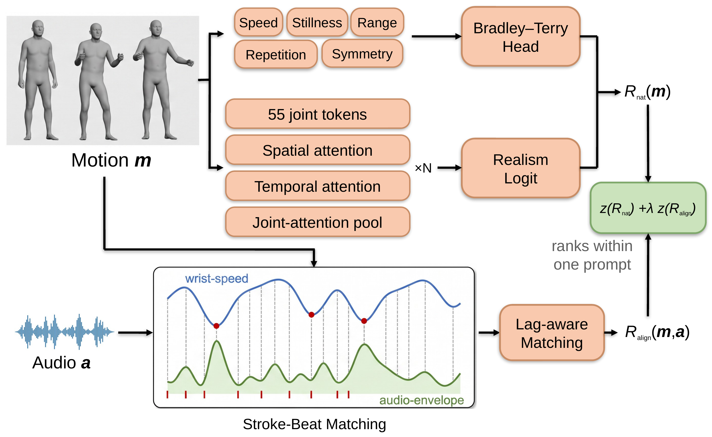

Example stimuli from the human studies reported in the paper. Nothing here is a new result — every number quoted below appears in the paper. The videos are provided so the comparisons can be inspected directly rather than taken on trust. In each clip the three panels play together: real motion capture, the untrained baseline, and our steered model, on the same speech.
Side-by-side comparisons
Each video plays three panels together on identical held-out speech: real motion capture, the untrained GestureLSM baseline, and a noise-steered policy.
Both policies shown are trained by winner imitation: for a given speech prompt the system samples K candidate initial noises, the learned reward picks the highest-scoring one, and the policy is trained to reproduce that winning noise — so at inference it proposes a good noise in one shot instead of searching. The first three clips use the policy trained with K = 32 candidates per prompt; the last uses the K = 64 policy from the reward-selected study. These are illustrative examples; the aggregate result over all clips and participants is in the table below.
| Study | Comparison | N | Mean pref. | d | p |
|---|---|---|---|---|---|
| Main study | winner imitation (K = 16) vs. baseline | 51 | −0.011 | −0.03 | 1.000 |
| Main study | winner imitation (K = 32) vs. baseline | 51 | −0.023 | −0.06 | 0.878 |
| Reward-selected | largest-search imitation (K = 64) vs. baseline | 30 | +0.085 | +0.23 | 0.345 |
Positive values mean participants preferred the tested policy; negative values mean they preferred the untrained baseline. In the same study 49 of 51 participants preferred real motion capture over that baseline, so the evaluation does detect a large quality difference. A training-free control that simply keeps the best-scoring of 32 random candidates raised the learned reward by +0.98 on all 15 held-out prompts, and also produced no reliable preference gain.
Reward exploitation
During the earlier weight-space experiments, optimizing against the predecessor reward produced outputs that scored well while looking clearly worse to people — the failure mode commonly called reward hacking. Below, each panel carries the reward score assigned to it: real motion capture on the left, the untrained baseline in the middle, and on the right the exploiting candidate, which the reward ranked highest of the three.
Exploits of this kind were catalogued and turned into test pairs. The deployed two-axis reward ranks 100% of those catalogued exploit pairs the way human raters did, against 62% for its predecessor — but closing a known exploit class still did not yield a system people preferred, which is the puzzle the paper sets out to explain.
What the action space reaches
The paper measures the variation available to steering three ways: whether candidates fall into distinct groups, how long an introduced difference survives, and whether the learned reward can be raised. The three videos below cover all three measurements — the parts you can judge with your own eyes. The third is below too.
Embeddings of 24 ordinary random candidates were clustered for each of 20 prompts; the panels show one member of each cluster alongside real motion. The same clustering procedure gave essentially the same score on matched single-Gaussian data, which contains no discrete modes by construction, in 99.7% of 600 draws — so the clusters do not by themselves establish distinct behavioural alternatives.
The generator is primed with a short opening pose before it starts. Here the same speech is decoded from three openings chosen to be as unlike each other as possible — at the first frame one begins mid-gesture with both arms raised while another stands with arms down. Within a few seconds the shared speech conditioning has pulled them back together, and by the end of the clip they are hard to tell apart. A difference injected at the beginning does not survive as a lasting alternative.
An initial-noise vector can be changed two ways: its overall size, and the direction it points. Tested separately, a policy free to change only the size settled on the generator's default and reproduced the baseline motion, so that freedom carries nothing useful and there is no video to show. The policy above holds the size fixed and learns only the direction — and it does raise the learned reward on speech it was never trained on. The usable variation lies in the direction of the noise, not its size.
Shown to the reviewer as A, B, C with the assignment hidden: one panel is the untrained baseline, one an ordinary fresh sample, and one a candidate produced by restarting generation from a partly-formed motion. All three are genuinely different motions, and all three were judged one coarse pattern.
System and reward


